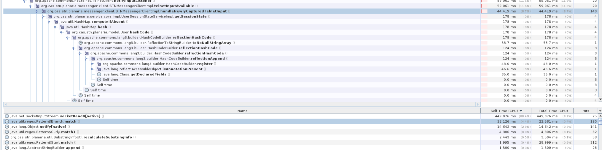
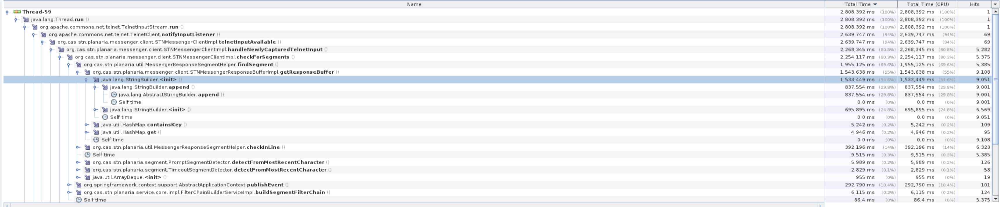
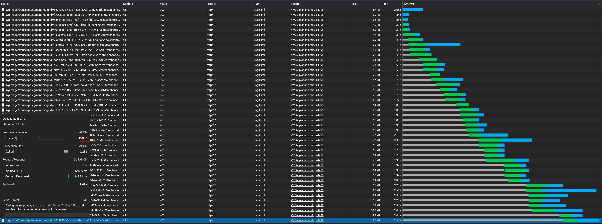
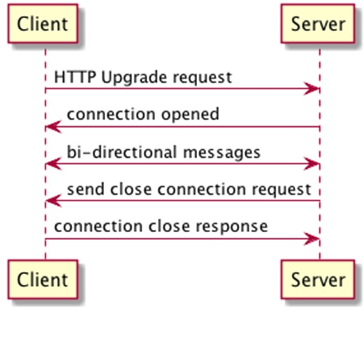
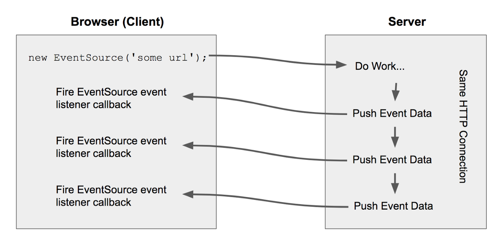

An Uncomfortably
Close Look at Performance
in STNext
Problems in STNext
- Pattern Matching
- Large Buffer Sizes
- Inefficient Algorithms
- Initializing Excess Objects
- Logging
- Early Data Retrieval
- Reprocessing Data
- Data Accumulation
- Image Blocking
Problem
We spend an excessive amount of time processing the response from messenger in regular expressions.
Problem
Solution
While this is definitely a major time sink, it is related more to how we choose to process data than the java algorithm. The benefit from attempting to improve this would likely be minimal. As such, I recommend we don't attempt to adjust this until we have fixed the other problem areas.
Suggested Card
None
Problem
Due to how we choose when to split the String we are working with, we reprocess large amounts of data
isBufferFull
@Override
public boolean isBufferFull (User user) {
StringBuilder builder = this.getResponseBuffer(user);
boolean tooLong = builder.length() > BUFFER_LIMIT;
// BUFFER_LIMIT = 10_000;
boolean metaOpen = checkMetaOpen(builder.toString());
return tooLong && !metaOpen;
}
checkMetaOpen
private boolean checkMetaOpen(String buffer) {
boolean inMeta = false;
String[] lines = buffer.split(PlanariaConstants.CRLF);
for (String line : lines) {
// Check for a start GROUP, COMPONENT
// or PRODUCT formulations meta-tag
Matcher metaStartMatcher = metaStartPattern.matcher(line);
if (metaStartMatcher.find()) {
String tag = metaStartMatcher.group(1);
boolean found = tag.equals(GROUP_TAG)
|| tag.equals(COMPONENT_TAG)
|| tag.equals(PRODUCT_TAG);
inMeta = found ? true : inMeta;
}
// Check for an end GROUP, COMPONENT
// or PRODUCT formulations meta-tag
Matcher metaEndMatcher = metaEndPattern.matcher(line);
if (metaEndMatcher.find()) {
String tag = metaEndMatcher.group(1);
boolean found = tag.equals(GROUP_TAG)
|| tag.equals(COMPONENT_TAG)
|| tag.equals(PRODUCT_TAG);
inMeta = found ? false : inMeta;
}
}
return inMeta;
}
canSplitOnSize
Solution
Find a more optimal way to decide when to split the buffer
Suggested Cards #1
Change methods so that the string can be broken based on size as well as substrings it contains
Suggested Cards #2
Optimize Algorithms as to not waste execution time on irrelevant data
Problem
Every time we run getResponseBuffer we initialize a new StringBuilder object. This method is executed many times, meaning we create a ton of new objects just for returning a StringBuilder object
getResponseBuffer
StringBuilder Times
Solution
Have an available StringBuilder so a new StringBuilder isn't required every time this method is run
Ways to Empty a StringBuilder
- Create a new StringBuilder
- Delete from Start to End
- Set StringBuilder length to 0
Suggestions
If a StringBuilder object is utilized, adjust the length to 0 rather than creating a new one on each use
Suggested Cards #1
- Create a static StringBuilder for this method
- Synchronize the block as to prevent thread issues
Suggested Cards #2
- Attach a StringBuilder Object to the User
Suggested Cards #3
Adjust the findSegment method in MessengerResponseSegmentHelper.java to not require a StringBuilder object be returned
Problem
Logging Takes a Significant Amount of Time
buildResponseFilterChain
@Override
public Deque buildResponseFilterChain () {
List responseFilterChainList = new ArrayList<>();
SortedMap> orderToFilterMap = new TreeMap<>();
for (STNResponseFilter filter : responseFilters) {
try {
STNResponseFilter newFilter = filter.getClass().newInstance();
newFilter.setEventPublisher(publisher);
newFilter.setApplicationContext(applicationContext);
AspectJProxyFactory factory = new AspectJProxyFactory(newFilter);
factory.addAspect(TimeLoggingAspect.class);
int order = getFilterOrder(newFilter.getClass());
if (!orderToFilterMap.containsKey(order)) {
orderToFilterMap.put(order, new ArrayList<>());
}
orderToFilterMap.get(order).add(factory.getProxy());
} catch (InstantiationException | IllegalAccessException e) {
LOGGER.warn("Exception attempting to create new instance of a response filter", e);
}
}
orderToFilterMap.values().stream().forEach(responseFilterChainList::addAll);
LOGGER.debug("The response filter list is {}", responseFilterChainList);
return new ArrayDeque<>(responseFilterChainList);
}
Solution
Follow through with Wes's Suggestion to switch to asynchronous logging
Suggested Card
None
Problem
When returning from a log hold, we retrieve all of the history data from MongoDB before the user chooses to load their history
Solution
Only download data when it is needed
Suggested Card
Change setup so that session setup doesn't require the users history prior to them requesting it
Problem
We reprocess messenger responses when a client returns from a log hold
Solution
- Store processed data in MongoDB
- Improve server processing times
Suggested Cards #1
Don't create a card for this as processing improvement will speed this up
Suggested Card #2
- Add a property in MongoDB to store processed response
Problem
Data retrieved from a log hold is accumulated on the front end rather than streamed
Poll And Accumulate History
function pollAndAccumulateHistory(response) {
...
return [];
}
Poll And Accumulate History
function pollAndAccumulateHistory(response) {
var lastResponseData = response.data;
if (angular.isArray(response.data)) {
response.data.forEach(function (respData) {
if (respData.hasOwnProperty("responses")
&& respData.responses.length > 0) {
messengerHistoryService.responses
= messengerHistoryService.responses.concat(respData.responses);
}
});
lastResponseData = response.data[response.data.length - 1];
}
if (response.status === 202
|| response.status === 204
|| (lastResponseData.hasOwnProperty("complete")
&& !lastResponseData.complete)) {
return httpRetryService.callWithRetry({
method: RESTSERVICES.pollHistory.requestMethod,
url: RESTSERVICES.pollHistory.endpoint + "?maxResponses=10"
}).then( pollAndAccumulateHistory );
} else if (lastResponseData.hasOwnProperty("complete")
&& lastResponseData.complete) {
const commandsToReturn
= angular.copy(messengerHistoryService.responses);
messengerHistoryService.responses.length = 0;
return commandsToReturn;
}
return [];
}
Solution
Standardize how we handle messenger data that is received on the client side and use the chosen method everywhere we receive this data
Suggested Card
- Extract Data Receiving Method from cli.srvc.js
- Implement Method in both messenger.history.srvc.js and in cli.srvc.js
Problem
A massive amount of time is spent waiting for images to be retrieved due to Polling and utilization of HTTP/1.1
What is Polling

Why is Polling a Problem
Polling Alternatives
- WebSocket
- Server Sent Events
What is a WebSocket
What is a Server Sent Event
Suggested Cards #1
- Switch to using Websocks or SSE
Suggested Cards #2
- Have the image data ready before it is requested
- When we know an image is going to be requested, send the request to the necessary database so it is ready when the client asks for it
Suggested Cards #3
Allow the Client to request multiple images at once
Key Take Aways
- Most performance issues have to due with how we process data
- There are LOTS of small optimizations that can be made
- Objects should only be initialized if they are needed
- Methods and objects should be named in a way that tells others what they do
- Code should be consistent so optimizations aren't needed in multiple places
Suggested Epic
Optimize the processing time of the messenger response
Stories
- Build a State Machine Diagram for Messenger Processing
- Remove Excess Data Transformations/Object Creations
- Optimize the heavy lifting methods for performance
- Modularize the code so we can find optimized methods easily